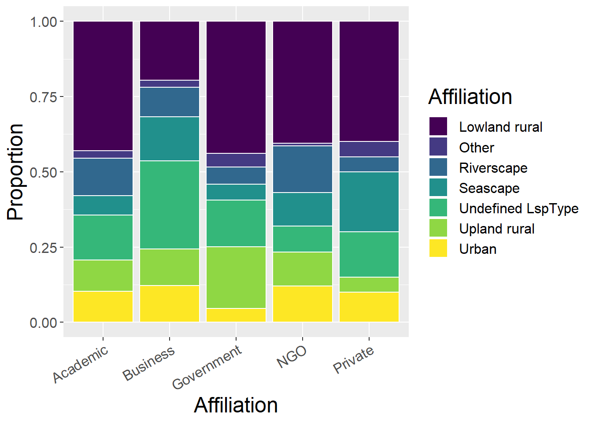
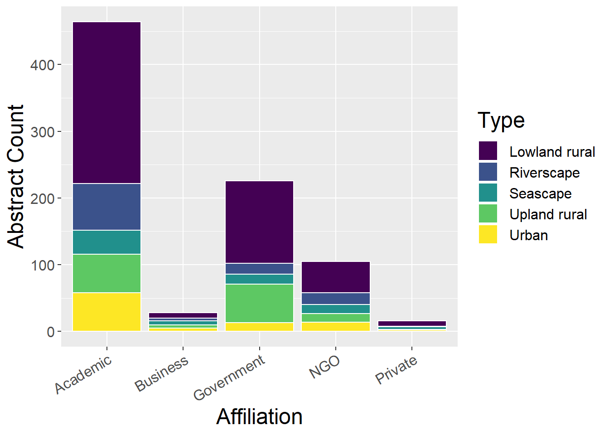
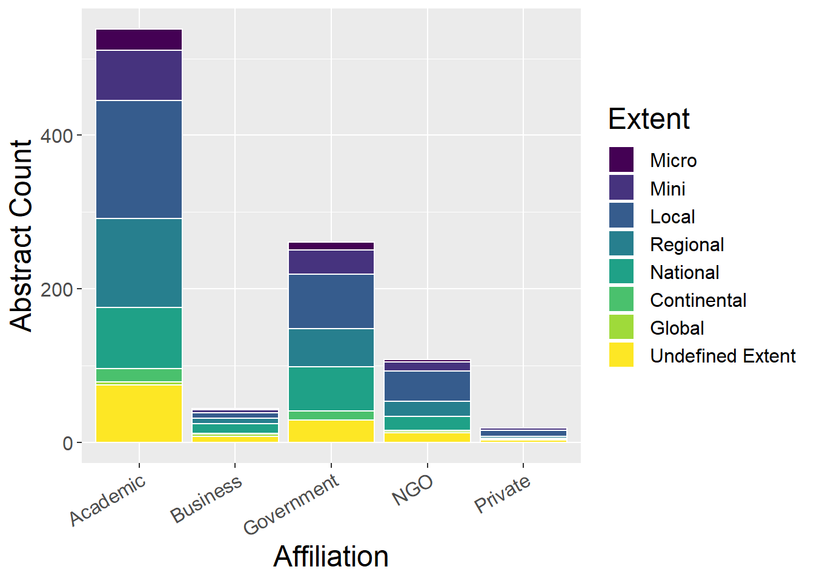
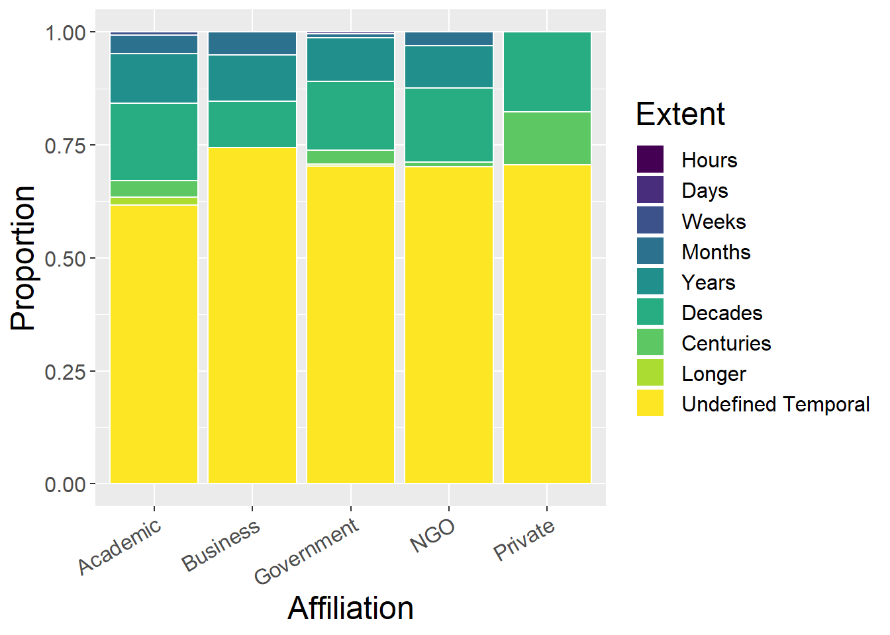
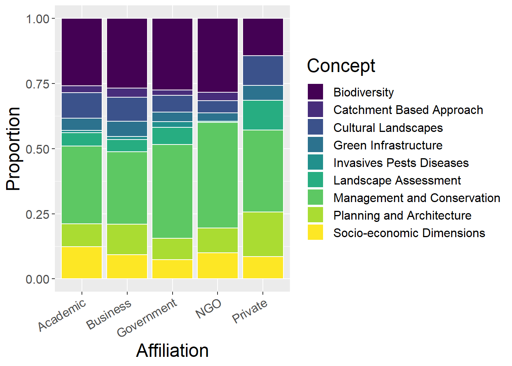

Chapter 4 Analysis by Author Affiliation
#spec(cpdata)
affildata <- cpdata %>%
select_if(is.numeric) %>%
gather(key = Affiliation, value = count, Academic:Private) %>%
filter(count > 0) %>%
group_by(`Affiliation`) %>%
summarise_all(sum, na.rm=T) 4.1 Total Conference Contributions
Quick observations:
- Academic contributors dominate, followed by Government (but as shown above, Government contributions have decreased recently, replaced by NGOs)
lspACounts <- affildata %>%
select(`Affiliation`,`Upland rural`, `Lowland rural`, Urban, Riverscape, Seascape, `Undefined LspType`,Other) %>%
mutate(Asum = rowSums(.[2:8])) %>% #calculate total for subsquent calcultation of proportion
gather(key = Type, value = count, -`Affiliation`, -Asum) %>%
mutate(prop = count / Asum) #calculate proportion
ggplot(lspACounts, aes(x=`Affiliation`, y=count)) + geom_bar(stat="identity")
4.2 Landscape Type
Stacked bar plots of contributions (by types and author affiliation)
4.2.1 Using all landscape types
Quick observations:
- Business not good at reporting landscape type!
- Private have greatest proportions of Seascape and Other
ggplot(lspACounts, aes(x=`Affiliation`, y=count, fill=Type)) + geom_bar(stat="identity", colour="white")
ggplot(lspACounts, aes(x=`Affiliation`, y=prop, fill=Type)) + geom_bar(stat="identity", colour="white")
4.2.2 Without ‘Undefined LspType’ and ‘Other’ landscape types
Quick observations:
- Government has greatest proportion of Upland Rural
- Business has greatest Urban proportion and smallest Lowland Rural proportion
- Academic dominates total number of all landscape types (with possible exception of Upland Rural)
lspACounts <- affildata %>%
select(`Affiliation`,`Upland rural`, `Lowland rural`, Urban, Riverscape, Seascape) %>%
mutate(Asum = rowSums(.[2:6])) %>% #calculate total for subsquent calcultation of proportion
gather(key = Type, value = count, -`Affiliation`, -Asum) %>%
mutate(prop = count / Asum) #calculate proportion
ggplot(lspACounts, aes(x=`Affiliation`, y=count, fill=Type)) + geom_bar(stat="identity", colour="white")
ggplot(lspACounts, aes(x=`Affiliation`, y=prop, fill=Type)) + geom_bar(stat="identity", colour="white")4.3 Species
Quick observations
- Academic seem to be majority by absolute number for all species
- Business and Private have greatest proportions of Generic Habitat
- NGOs have greatest proportion of Birds (RSPB?)
speciesACounts <- affildata %>%
select(`Affiliation`,Mammals, Humans, Birds, Reptiles, Inverts, Plants, Amphibians, Fish, `Generic Habitat`,`Woodland Forests`) %>%
mutate(Asum = rowSums(.[2:11])) %>% #calculate total for subsquent calcultation of proportion
gather(key = Type, value = count, -`Affiliation`, -Asum) %>%
mutate(prop = count / Asum) #calculate proportion
ggplot(speciesACounts, aes(x=`Affiliation`, y=count, fill=Type)) + geom_bar(stat="identity", colour="white")
ggplot(speciesACounts, aes(x=`Affiliation`, y=prop, fill=Type)) + geom_bar(stat="identity", colour="white")4.4 Methods
Quick observations
- Academic seem to be majority by absolute number for all methods
- Business obviously lower proportion of empirical studies (expensive?), substituted by GIS and qualitative
- Government has smallest proportion of qualitative
- Private has greatest proprtion of theoretical, no RS and relatively little GIS (technical training?)
methodsACounts <- affildata %>%
select(`Affiliation`,Empirical, Theoretical, Qualitative, Quantitative, GIS, `Remote sensing`) %>%
mutate(Asum = rowSums(.[2:7])) %>% #calculate total for subsquent calcultation of proportion
gather(key = Type, value = count, -`Affiliation`, -Asum) %>%
mutate(prop = count / Asum) #calculate proportion
ggplot(methodsACounts, aes(x=`Affiliation`, y=count, fill=Type)) + geom_bar(stat="identity", colour="white")ggplot(methodsACounts, aes(x=`Affiliation`, y=prop, fill=Type)) + geom_bar(stat="identity", colour="white")4.5 Spatial Extent
Quick observations
- Academic seem to be majority by absolute number for all extents
- Business have largest proportion of Global and National studies, with smallest proprtion of Local studies
- Private has larest proportion of Local and Mini studies (cost-related and given no RS and few GIS studies?)
- Academic: decreasing proportion Local -> Regional -> National -> Global
- Government: greater proportion of National than Regional
spatialACounts <- affildata %>%
select(`Affiliation`,Micro, Mini, Local, Regional, National, Continental, Global,`Undefined Extent`) %>%
mutate(Asum = rowSums(.[2:9])) %>% #calculate total for subsquent calcultation of proportion
gather(key = Type, value = count, -`Affiliation`, -Asum) %>%
mutate(prop = count / Asum) #calculate proportion
ggplot(spatialACounts, aes(x=`Affiliation`, y=count, fill=Type)) + geom_bar(stat="identity", colour="white")
ggplot(spatialACounts, aes(x=`Affiliation`, y=prop, fill=Type)) + geom_bar(stat="identity", colour="white")
4.6 Temporal Extent
Quick observations
- Vast majority of all affiliations did not list temporal extent of the study Academic seem to be majority by absolute number for all methods
- Not much more of interest here…
temporalACounts <- affildata %>%
select(`Affiliation`,Hours, Days, Weeks, Months, Years, Decades, Centuries, Longer, `Undefined Temporal`) %>%
mutate(Asum = rowSums(.[2:10])) %>% #calculate total for subsquent calcultation of proportion
gather(key = Type, value = count, -`Affiliation`, -Asum) %>%
mutate(prop = count / Asum) #calculate proportion
ggplot(temporalACounts, aes(x=`Affiliation`, y=count, fill=Type)) + geom_bar(stat="identity", colour="white")ggplot(temporalACounts, aes(x=`Affiliation`, y=prop, fill=Type)) + geom_bar(stat="identity", colour="white")
4.7 Concepts
Quick observations
- Academic seem to be majority by absolute number for all extents
- Business have greatest proportions of climate change and ecosystem services, less interested in history and legacy
- All other affiliations reasonably similar in terms of proportions
conceptACounts <- affildata %>%
select(`Affiliation`,`PPS of landscapes`,
`Connectivity and fragmentation`, `Scale and scaling`,`Spatial analysis and modeling`,LUCC,`History and legacy`,`Climate change interactions`,`Ecosystem services`,`Landscape sustainability`,`Accuracy and uncertainty`) %>%
mutate(Asum = rowSums(.[2:11])) %>% #calculate total for subsquent calcultation of proportion
gather(key = Type, value = count, -`Affiliation`, -Asum) %>%
mutate(prop = count / Asum) #calculate proportion
ggplot(conceptACounts, aes(x=`Affiliation`, y=count, fill=Type)) + geom_bar(stat="identity", colour="white")
ggplot(conceptACounts, aes(x=`Affiliation`, y=prop, fill=Type)) + geom_bar(stat="identity", colour="white")
4.8 Other Concepts
Quick observations
- Academic seem to be majority by absolute number for all extents
- Government and NGOs have greater proportion of Management and Conservation than Academic
- Private low on biodiversity but higher on cultural landscapes, landscape assessment and planning
oconceptACounts <- affildata %>%
select(`Affiliation`,`Green Infrastructure`,`Planning and Architecture`,`Management and Conservation`,`Cultural Landscapes`,`Socio-economic Dimensions`,Biodiversity,`Landscape Assessment`,`Catchment Based Approach`,`Invasives Pests Diseases`) %>%
mutate(Asum = rowSums(.[2:10])) %>% #calculate total for subsquent calcultation of proportion
gather(key = Type, value = count, -`Affiliation`, -Asum) %>%
mutate(prop = count / Asum) #calculate proportion
ggplot(oconceptACounts, aes(x=`Affiliation`, y=count, fill=Type)) + geom_bar(stat="identity", colour="white")
ggplot(oconceptACounts, aes(x=`Affiliation`, y=prop, fill=Type)) + geom_bar(stat="identity", colour="white")